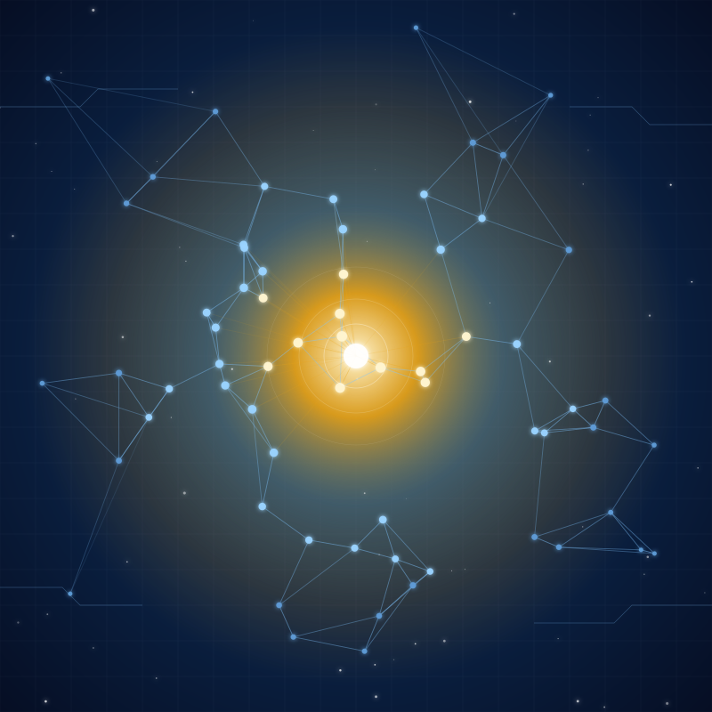
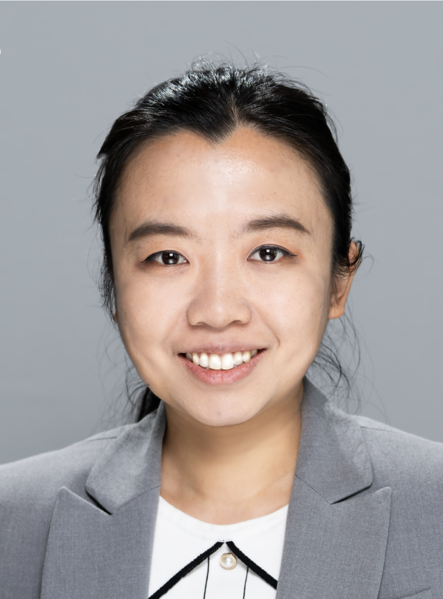
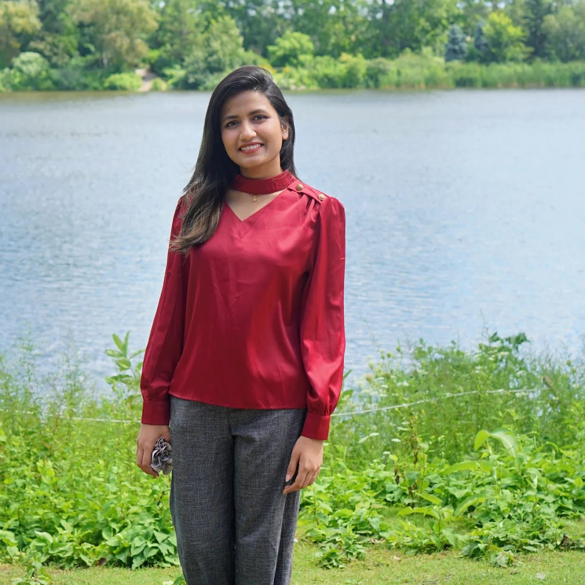
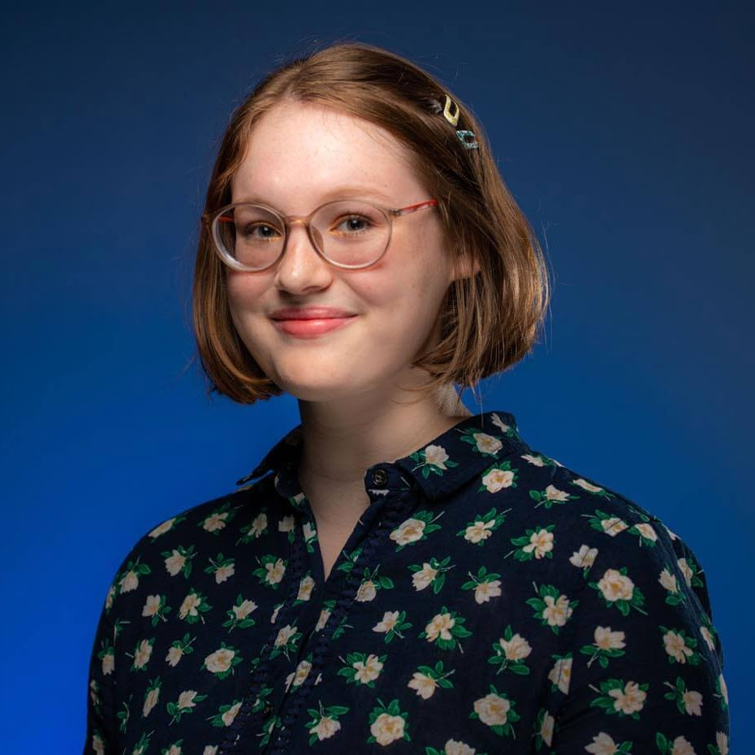
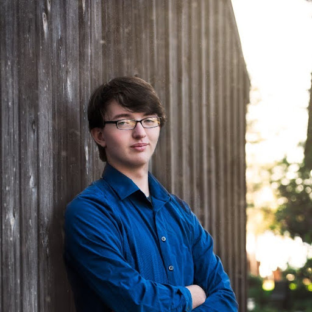

SDML
Self-Driving Manufacturing Lab
Autonomous experimentation, AI-guided digital twins, and closed-loop optimization for advanced manufacturing.
USM Manufacturing Robotics
Dr. Amir KordijaziCASTLE brings together researchers from the University of Maine and the University of Southern Maine working at the intersection of artificial intelligence, hardware, energy, manufacturing, language, security, and the physical world — with a shared focus on trust, efficiency, and deployment under real-world constraints.

We work on the parts of AI that touch reality — running on small devices, steering physical machines, sharing the electric grid, retrieving the right information, manufacturing real materials, and being safe enough to trust with all of it. Our research spans the algorithm, the hardware, the system, and the people who use them.
Each of our labs takes a slice of that problem — from energy-efficient accelerators for large language models, to autonomous experimentation in manufacturing, to resilient AI control of distribution grids, to multi-user extended reality. Together they form a single research center serving Maine and the field at large.
Each lab is led by its own principal investigator and runs independently — but they share students, infrastructure, and a common research agenda for AI that is trustworthy and deployable.
Autonomous experimentation, AI-guided digital twins, and closed-loop optimization for advanced manufacturing.
USM Manufacturing Robotics
Dr. Amir KordijaziReliable, secure, energy-efficient AI — including hardware acceleration for large language models.
UMaine AI hardware LLMs
Dr. Ayesha SiddiqueThe first information-retrieval lab in Maine: RAG systems, multimodal LLMs, and applied AI on domain-specific tasks.
USM NLP RAG
Dr. Behrooz MansouriReinforcement learning, multi-agent systems, and real-time hardware-in-the-loop experimentation for resilient grids.
UMaine RL Smart grid
Dr. Hepeng LiDistributed AI, edge inference, and device-edge-cloud co-design for real-time XR and LLM services.
UMaine Edge AI XR
Dr. Xueyu Hou · Dr. Yongjie GuanMulti-user AR, UAV swarms, and programmable wireless infrastructure for collaborative AI in the physical world.
UMaine AR/VR Networking
Dr. Yongjie GuanAI security across the full stack: microelectronic security, trustworthy AI, agentic AI, and AI-enabled edge systems.
UMaine AI security Trustworthy AI
Dr. Prabuddha ChakrabortyOur labs work on different problems, but the threads connecting them are the same: making AI smaller, safer, smarter about the physical world, more grounded in reliable information, and harder to fool.
Real-time inference on resource-constrained devices — Jetson, FPGAs, micro-power systems — for XR, drones, and robotics.
Adversarial robustness, explainable models, security-aware accelerators, and reliability under fault.
Hardware acceleration for LLMs, conversational and math information retrieval, multimodal RAG.
Self-driving labs, digital twins, predictive analytics, and computer vision for materials and manufacturing.
Reinforcement learning and multi-agent control for distributed energy resources, with PHIL/CHIL validation.
Multi-user XR, UAV swarms, SDN-based wireless testbeds, and communication-computation co-design.
Seven principal investigators across the University of Maine and the University of Southern Maine, leading the labs that make up CASTLE.
Director, CASTLE · Dr. Waldo "Mac" Libbey '44 Professor & Assistant Professor, ECE, University of Maine
SIEGE Lab
Leads CASTLE and directs the SIEGE Lab. Research at the intersection of AI and security — spanning microelectronic security, trustworthy machine learning, agentic AI, and secure AI-enabled edge systems.
Assistant Professor of Industrial Engineering, University of Southern Maine
SDML — Self-Driving Manufacturing Lab
AI/ML for advanced manufacturing, AI-guided digital twins, predictive analytics, and autonomous experimentation. 40+ peer-reviewed publications; recipient of the Faculty Senate Award for Scholarship at USM and two AFS Best Paper Awards.
Assistant Professor, Electrical and Computer Engineering, University of Maine
GENIUS Lab
Reliable, secure, and energy-efficient AI; security-aware large language models; explainable-AI-guided hardware acceleration for safety-critical applications. Ph.D., University of Missouri (2020).
Assistant Professor of Computer Science, University of Southern Maine
AIIR Lab · Dubyak Center Director
Information retrieval, conversational math search, legal IR. Introduced Tangent-CFT and MathAMR; co-organized the ARQMath lab at CLEF 2020–2022. Director of the USM Computer Science graduate program.
Robert N. Haskell Assistant Professor, ECE, University of Maine
Microgrid Laboratory
Smart grids and microgrids, reinforcement learning, multi-agent systems. IEEE PESGM Best Paper Award (2018, 2024). Chair of the ADP and RL in Power and Energy Internets Task Force.

Assistant Professor, ECE, University of Maine
CyPAIS Lab
Distributed AI systems, edge computing, and next-generation networking for real-time XR and LLM services. Device-edge-cloud collaboration, efficient model inference, latency-aware system design.
Assistant Professor, University of Maine
U-NEX Lab · CyPAIS co-PI
Multi-user augmented reality, edge computing, and wireless networking. Decentralized, low-latency systems for shared immersive environments across heterogeneous devices.
Our students drive the research. Below are graduate researchers currently working across CASTLE's labs.
Ph.D. Student, ECE, University of Maine
GENIUS Lab
LLM hardware acceleration, energy-efficient explainable AI, and security-aware AI hardware. B.Sc., American International University, Bangladesh.
Graduate Student, ECE, University of Maine
CyPAIS Lab
Machine Learning as a Service (MLaaS), efficient LLMs, distributed and edge computing — with a focus on live LLM-based content delivery in stochastic, resource-constrained environments.
Graduate Student, University of Maine
U-NEX Lab
Multi-user augmented reality, multi-user SLAM, and smart-agriculture monitoring using edge computing and sensor networks for precision-agriculture applications.
4th Year Ph.D. Scholar, ECE, University of Maine
SIEGE Lab
AI for microelectronic security — bringing machine learning to the protection and verification of integrated-circuit designs.

Ph.D. Candidate, ECE, University of Maine
SIEGE Lab
AI security and trustworthy AI — analyzing and hardening machine-learning systems against adversarial threats.
3rd Year Ph.D. Scholar, ECE, University of Maine
SIEGE Lab
Agentic AI and system security — building autonomous AI agents that can operate safely inside complex software systems.

3rd Year Ph.D. Scholar, ECE, University of Maine
SIEGE Lab
Integrated hardware/software security — co-design approaches that make security guarantees survive across the full stack.

2nd Year Ph.D. Scholar, ECE, University of Maine
SIEGE Lab
Big data, AI, and reinforcement-learning databases — building data systems that can power AI workloads at scale.

2nd Year Ph.D. Scholar, ECE, University of Maine
SIEGE Lab
Cybersecurity AI — applying machine learning to detection, response, and defense of modern cyber systems.
2nd Year Ph.D. Scholar, ECE, University of Maine
SIEGE Lab
AI security — developing techniques that make machine-learning systems harder to attack and easier to verify.
The Center's labs also host undergraduate and master's students, and welcome high-school interns through the AIIR Lab's outreach program.
Several of our labs are recruiting graduate researchers for the 2026–2027 academic year, and we welcome industry and academic collaborators across all seven labs.